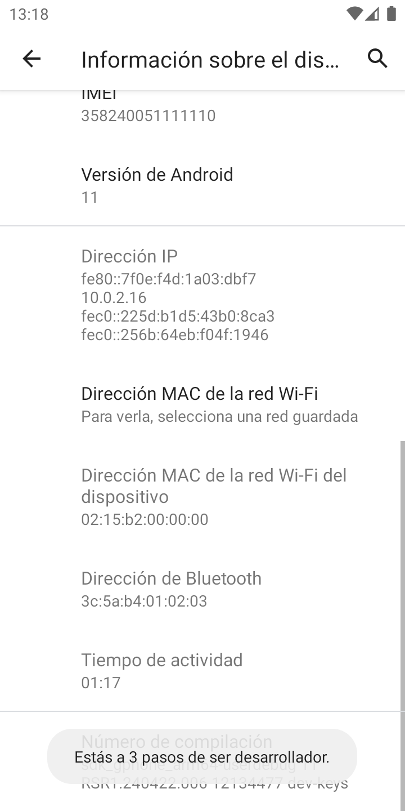
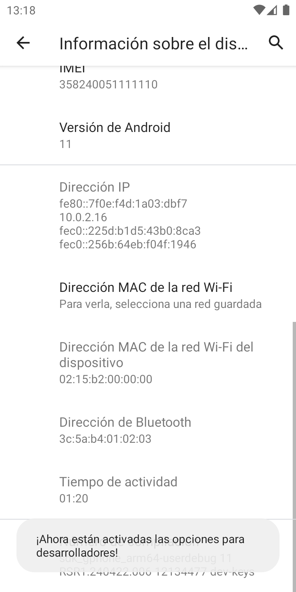
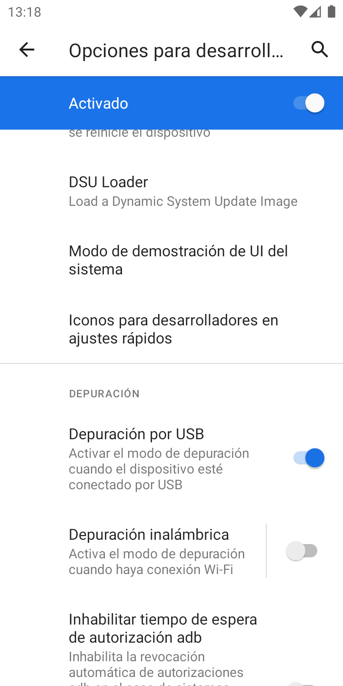
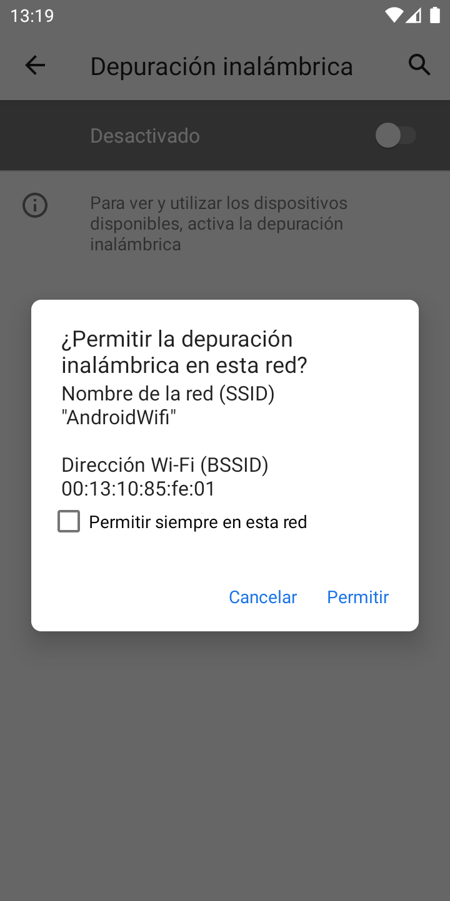
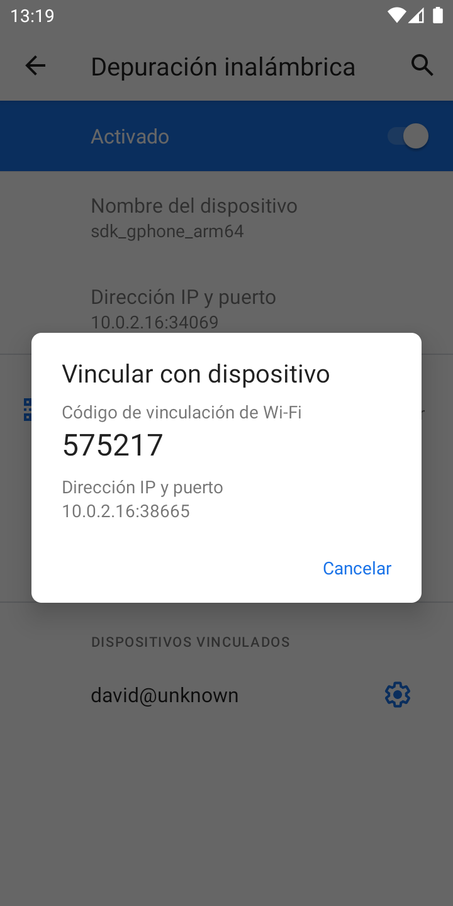

Guía para dejar un teléfono Android administrado por DallyControl, conservando sus fotos, archivos y WhatsApp.
Qué necesitas
El teléfono Android, con batería, y su clave de desbloqueo.
Un computador con Windows 10 u 11 conectado a Internet. No hay que instalar nada.
El archivo Inscribir-DallyControl-…cmd que te envió el administrador (sirve para varios teléfonos).
Para conectar: un cable USB de datos, o bien Wi‑Fi si el teléfono tiene Android 11 o superior (el teléfono y el computador en la misma red Wi‑Fi).
Unos 10 minutos por teléfono.
En resumen: (1) quitar las cuentas del teléfono, (2) activar las opciones de desarrollador, (3) activar la depuración (cable o Wi‑Fi), (4) abrir el programa en el computador y seguir lo que dice, (5) volver a agregar las cuentas.
Los nombres de los menús cambian un poco según la marca (Motorola, Samsung, Xiaomi…). Si no encuentras una opción, usa la lupa de búsqueda de Ajustes y escribe su nombre (por ejemplo «compilación» o «depuración»).
1Quitar las cuentas del teléfono
Ajustes → Cuentas
Android solo deja que DallyControl administre un teléfono que no tenga cuentas mientras se inscribe.
Abre Ajustes → Cuentas (en algunos teléfonos: «Contraseñas y cuentas» o «Usuarios y cuentas»).
Toca cada cuenta (Google, Samsung, Xiaomi, WhatsApp Business…) → Quitar cuenta.
No se borra nada del teléfono: fotos, contactos guardados en el teléfono y chats de WhatsApp se quedan. Ten a la mano el correo y la contraseña para volver a agregar la cuenta al final.
Si te equivocas y queda alguna, el programa te dice cuál falta y espera a que la quites.
2Activar las opciones de desarrollador

Tocar «Número de compilación»

Listo a los 7 toques
Abre Ajustes → Acerca del teléfono (o «Información del teléfono»). En algunos va dentro de «Información de software».
Busca Número de compilación y tócalo 7 veces seguidas. Va diciendo «Estás a 3 pasos…».
Si pide la clave del teléfono, escríbela.
Aparece: «¡Ahora están activadas las opciones para desarrolladores!»
Las opciones quedan en Ajustes → Sistema → Opciones para desarrolladores (Samsung: al final de Ajustes).
3Activar la depuración: elige cable o Wi‑Fi
A. Con cable USB

Opciones para desarrolladores
En Opciones para desarrolladores, activa Depuración por USB (o «Depuración USB») y acepta.
Conecta el teléfono al computador con el cable. Si el teléfono pregunta qué hacer con la conexión USB, elige «Transferir archivos».
Cuando el programa lo pida, aparecerá en el teléfono «¿Permitir depuración USB?»: marca «Permitir siempre desde este computador» y toca Permitir.
Si el computador no reconoce el teléfono por cable (pasa en algunos computadores por falta del controlador de la marca), usa Wi‑Fi.
B. Sin cable, por Wi‑Fi (Android 11 o superior)

Permitir en esta red

Código y dirección
El teléfono y el computador conectados a la misma red Wi‑Fi.
En Opciones para desarrolladores, toca el nombre «Depuración inalámbrica» (no solo el interruptor) y actívala → Permitir.
Toca «Vincular dispositivo con código de sincronización» (o «…con código de vinculación»).
Aparece un código de 6 números y una Dirección IP y puerto. Déjalo abierto: el programa te pedirá los dos.
Luego el programa puede pedir la otra Dirección IP y puerto: la que se ve en la pantalla «Depuración inalámbrica» debajo de «Nombre del dispositivo».
4Abrir el programa en el computador
Haz doble clic en el archivo Inscribir-DallyControl-…cmd.
Si Windows muestra «Windows protegió su PC»: toca Más información → Ejecutar de todas formas. (Es normal con archivos descargados.)
Se abre una ventana negra que va diciendo qué hacer. La primera vez descarga sola las herramientas de Android (unos 7 MB).
Cuando pregunte cómo conectar, escribe 1 (cable) o 2 (Wi‑Fi) y presiona Enter. Sigue las indicaciones.
Así se ve cuando todo sale bien:
DallyControl - Inscribir un teléfono sin formatear
Carpeta: Preventa Bogotá
=== Paso 1 de 5: preparar este computador === OK Herramientas de Android listas.=== Paso 2 de 5: conectar el teléfono ===
Escribe 1 o 2 y presiona Enter: 1
OK Conectado: motorola moto e40 (Android 11)=== Paso 3 de 5: revisar las cuentas del teléfono === OK El teléfono no tiene cuentas: se puede inscribir.=== Paso 4 de 5: instalar DallyControl === OK DallyControl instalado.
OK Soporte remoto instalado.
OK DallyControl administra el teléfono.=== Paso 5 de 5: conectar con la consola === OK Inscrito. En unos segundos aparece en la consola.=== Listo ===
¿La apago ahora en el teléfono? Escribe S y Enter (o solo Enter para dejarla): S
OK Depuración apagada.
5Al terminar
Vuelve a agregar las cuentas: Ajustes → Cuentas → Agregar cuenta.
Si al final escribiste S, la depuración ya quedó apagada. Si no, apágala en Opciones para desarrolladores.
El teléfono aparece en la consola de DallyControl en la carpeta que eligió el administrador, con su política.
Para el siguiente teléfono, usa el mismo archivo.
Si algo sale mal
Lo que dice el programa
Qué hacer
«El teléfono tiene estas cuentas…»
Quita las cuentas que muestra (también las de Samsung, Xiaomi o WhatsApp Business) y presiona Enter en el programa.
«Todavía no veo el teléfono» (cable)
Usa un cable de datos (algunos solo cargan), prueba otro puerto USB, revisa que «Depuración por USB» esté activa y acepta «¿Permitir depuración USB?» en el teléfono. Si sigue igual, cierra y vuelve a abrir el programa y elige 2 (Wi‑Fi).
«No se pudo vincular»
El código cambia cada vez: vuelve a tocar «Vincular dispositivo con código…» y escribe el código nuevo. Revisa que el teléfono y el computador estén en la misma red Wi‑Fi (no la de invitados).
«Android dice que el teléfono todavía tiene cuentas»
Queda alguna cuenta oculta: revisa de nuevo Ajustes → Cuentas y quítalas todas.
«otro usuario o un perfil de trabajo»
Quita el usuario adicional o el perfil de trabajo (Ajustes → Sistema → Varios usuarios, o Cuentas → Trabajo).
«Otro programa ya administra este teléfono»
El teléfono ya tiene otro sistema de administración (otro MDM). Contacta a soporte.
«No se pudieron descargar…»
El computador no tiene Internet o una red que bloquea descargas. Prueba otra red.
Windows no deja abrir el archivo
«Más información» → «Ejecutar de todas formas». Si el antivirus lo bloquea, pide al administrador que lo permita.
Para soporte: cada inscripción guarda un registro en %LOCALAPPDATA%\DallyControl (el programa muestra la ruta al final). Envíalo junto con la marca y modelo del teléfono.
DallyControl · Inscripción sin formatear · El programa no instala nada en el computador: las herramientas de Android que descarga quedan en la carpeta %LOCALAPPDATA%\DallyControl y se pueden borrar cuando quieras.